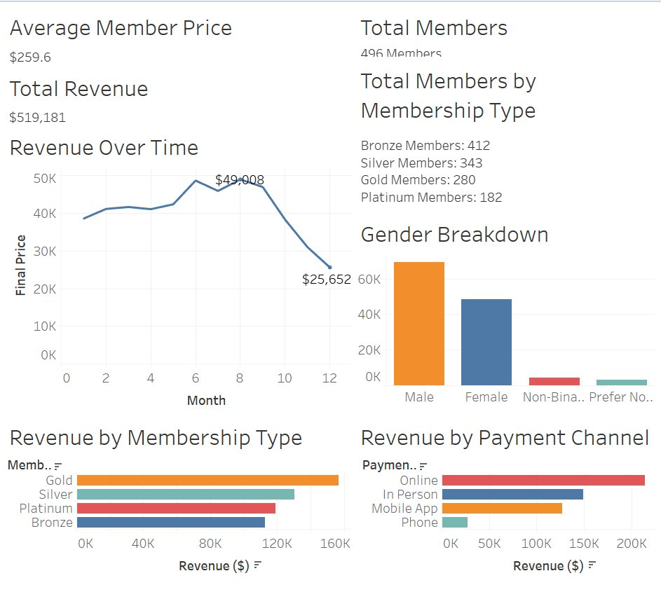

High Altitude Martial Arts Business Report
Introduction
This analysis zeroes in on the financial engine of the gym—membership revenue. Because sustained profitability funds coaching quality, facility upgrades, and growth, our goal is to pinpoint the levers that most directly move top-line and margin. We will quantify how much money memberships tend to generate, map where memberships are purchased (front desk vs. online), when memberships are purchased (day-of-week patterns), and which memberships are purchased. This lets us identify high-yield channels, peak selling windows, and the offerings that contribute the most revenue. We’ll also examine the discount rates and member demographics to understand its impact on purchase behavior
Concretely, we will (1) measure quarterly and monthly membership revenue, (2) determine the average membership purchase point, (3) rank plans by revenue contribution, (4) profile purchase timing by day, (5) attribute new sign-ups by channel, (6) compare the average discount given between members by student status, and (7) identify who our main customer are by student status and gender. The outcome is a clear, data-backed set of recommendations to optimize pricing, promos, staffing, and marketing allocation so that every dollar spent turns into more predictable, higher-margin membership income.
Analysis
Quarterly & Monthly Membership Revenue
Quarterly Revenue (Created with Python File):

Monthly Revenue (Created with Python File):

Key Findings:
Looking at both the quarterly and monthly revenue charts, there is a pattern showing that the highest revenue is in the middle of the year. For the quarterly chart, the highest point was Q3 2024 with $49,456. Then for the monthly chart the highest was month 6, 2024 with $18,570. This suggests that there is typically a spike in new memberships or renewals in the summer. While the lowest points for quarterly are Q4 of 2022 and Q4 of 2025. Then, the monthly revenue having the 2 lowest months be month 10 of 2022 and month 10 of 2025. This could be due to seasonal slowdown because throughout both of these charts you see the lows are typically in the winter seasons. The lowest points on both charts are most likely due to the store opening in that month/quarter and then we are currently in Q4 of 2025 so there are still sales that could happen. Overall, the data shows growth through the years with a slight dip in 2025.
Recommendations:
The actionable recommendations would be to look at what they did over the summer to promote sign-ups and renewals then to try to repeat those strategies in the down months. This would hopefully lessen the decrease in those months. Another actionable recommendation would be to make special membership offers, deals, or to have winter events so it would encourage people to sign up and renew. When you have a plan that includes seasonal marketing and special winter events, it promotes the gym along with allowing marketing points. By doing this it can either lessen the decrease in the off months, or it can assist steady growth.
Average Membership Purchase Point (Created with SQL File)
Average Membership Purchase Point (List Price): $279.15
Key Findings:
The average membership purchase point of $279.15 falls between the
Silver ($250) and Gold ($400) tiers, suggesting members gravitate toward
mid-range options. This indicates that most members seek a balance
between affordability and benefits rather than opting for either budget
or premium tiers. The $29 premium above Silver suggests members are
willing to pay slightly more than the base mid-tier price. This pricing
sweet spot represents the typical member's willingness to invest in
their martial arts training.
Recommendations:
Focus marketing efforts and promotional campaigns on gold and silver
memberships, as these mid-tier options align with typical member
purchasing behavior. Enhance the value proposition of gold memberships
specifically, since the average purchase point suggests members are
willing to spend slightly more than silver pricing. Consider creating a
mid-tier package priced around $280-$300 to directly target the average
purchase point and maximize conversion rates.
Revenue by Membership Plan (Created with Python File)

Key Findings:
The chart shows a clear revenue ladder by plan: Gold leads at $156,924, followed by Silver ($130,435), Platinum ($118,902), and Bronze ($112,920). Gold is the strongest contributing plan, suggesting strong willingness to pay for premium features. The gap from Gold to Silver is significant (around 20%), while the spread across Silver, Platinum, and Bronze is tighter. This shows that there is some cannibalization or similar perceived value among those plans.
Recommendations:
We need to double down on the perks for gold tier and above (loyalty credits, priority class access) and target the upsells from Silver/Bronze highlighting 2 to 3 tangible benefits like extra classes or guest passes. For those middle tiers, we should make sure we clarify the differentiation between them. We should also market the platinum membership with a standout benefit or simplify the lineup to prevent the paradox of choice. Other recommendations include the following: run price and offer A/B tests on silver vs platinum, bundle popular add-ons into Platinum, and use limited-time upgrade promos around those high intent periods we spoke of earlier. Finally, we can implement segment campaigns to move students and price-sensitive buyers from Bronze to Silver, and performance-oriented members from Silver to Gold so each push moves members one tier up.
Sign-Ups By Channel (Created with Python File)

Key Findings:
The sign-up chart shows that over half of the new memberships come from online and in person. While the two lowest are through the mobile app and over the phone. This shows us that people like to sign up digitally rather than doing it in person or over the phone. The digital way to sign up is 65.7% while signing up with someone’s assistance is 34.3%. This is probably due to how fast, how efficient it is, along with social media ads. Even though the in person sign up and over the phone sign-ups are low, it is still valuable because they allow staff to make a connection with the people signing up along with answering their questions. Overall, the pie chart shows that there is a strong online presence but the in person and over the phone presence could be improved to have a higher sign-up rate.
Recommendations:
The actionable recommendations would be to continue to invest in digital marketing and their website because that is what brings in over half of their sign-ups. Another improvement would be to update their mobile app UI and experience. If they make it easier and more accessible to update their membership, then it would improve their app performance. This would make it easier to announce events and updates to the members. Then for in-person sign-ups I would recommend training the front desk staff to improve the sign-up experience by giving out special offers or training them on how to treat the customer. These actions would increase their sign-up experience and overall improve customer experience.
Membership Purchases by Day of Week (Created with Python File)

Key Findings:
Here you can see that our membership purchases peak on Thursday with 311, strong Tuesday through Friday (284-311) and our weakest day is Monday. The weekends are slightly lower than the weekday levels suggesting that people in our area choose to sign up after the week starts and before the weekend. Overall, the spread between Thursday and Monday is noticeable and points to clear timing opportunities.
Recommendations:
We need to keep leaning into digital/in-club pushes Tue-Thu. When the intent with our customer base is highest on those days is when there should be promos. To lift our slower days, test something like ‘Back-on-Track Monday’, a perk (free class add-on or waived fee) and weekend bundles (friend/family sign-ups, first-class-free). We should work in tandem with marketing to align email and paid ads to land early Tue/Thu, and staff up the front-desk coverage mid-week. The goal is to amplify mid-week peaks while raising Monday and the weekend conversion without heavy discounting.
Average Discount by Student Status (Created with Excel File)

Key Findings
The average discount rate is virtually identical between students and non-students, with non-students receiving 17.16% and students receiving 17.12%. This minimal 0.04 percentage point difference suggests the school applies to a consistent discount strategy across both demographic segments. The near-equal discount rates indicate that student status does not significantly influence pricing incentives or promotional offers. Both groups benefit from approximately the same level of price reductions on membership fees.
Recommendations
Offer students a higher discount rate than non-students to make memberships more affordable for this budget-conscious demographic. Increase student discounts from 17% to 20-25% to use pricing as a tool to attract more student members. Research what competing martial arts schools offer students to ensure your pricing remains competitive and appealing to younger members.
Members by Gender and Student Status (Created with Excel File)

Key Findings:
Non-students comprise approximately 75% of the membership base, significantly outnumbering the 25% student population. Males dominate both segments, representing roughly 60% of total membership, while females account for about 33%. The gender distribution remains consistent across student and non-student categories, with males being nearly twice as prevalent as females. Gender diversity beyond male/female categories represents less than 3% of the membership.
Recommendations:
Develop targeted student recruitment initiatives such as partnerships with local schools and universities, to grow this underrepresented 25% segment. Implement female-focused programming and marketing campaigns to address the gender imbalance and increase female membership beyond the current 33%. Consider introducing student specific discounts or flexible membership options to make the martial arts school more accessible to younger demographics.
Conclusion
Overall, the data shows a simple story: revenue is strongest in the middle of the year, most sign-ups happen online, purchases are highest Tuesday–Thursday (especially Thursday), and the gold plan brings in the most money. The weak spots are winter months, Mondays, and weekends, and the mid-tier plans look too similar. To fix this, repeat what worked in summer during slower months, time promos and staffing for mid-week peaks, and keep improving the website/app so online sign-ups stay easy. There is an opportunity to attract more younger members by offering student-specific discounts, increasing the appeal of memberships for this group Another crucial step is to make the plan differences clearer by adding a standout perk to platinum and continuing to encourage upgrades to gold so more members move to higher-value tiers without relying on heavy discounts